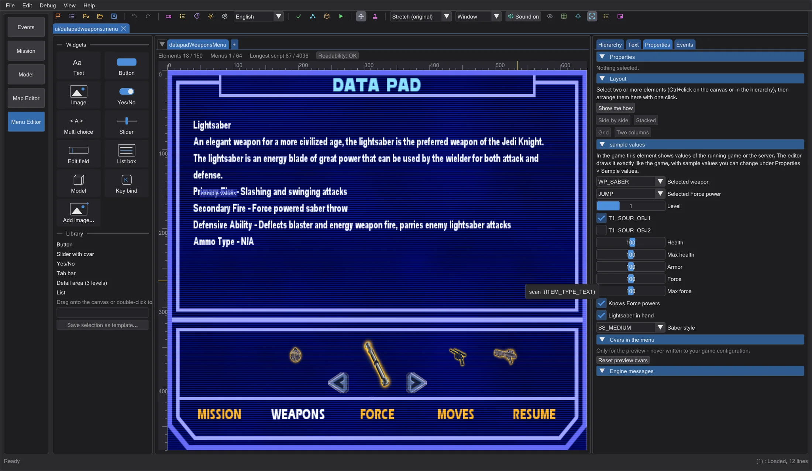
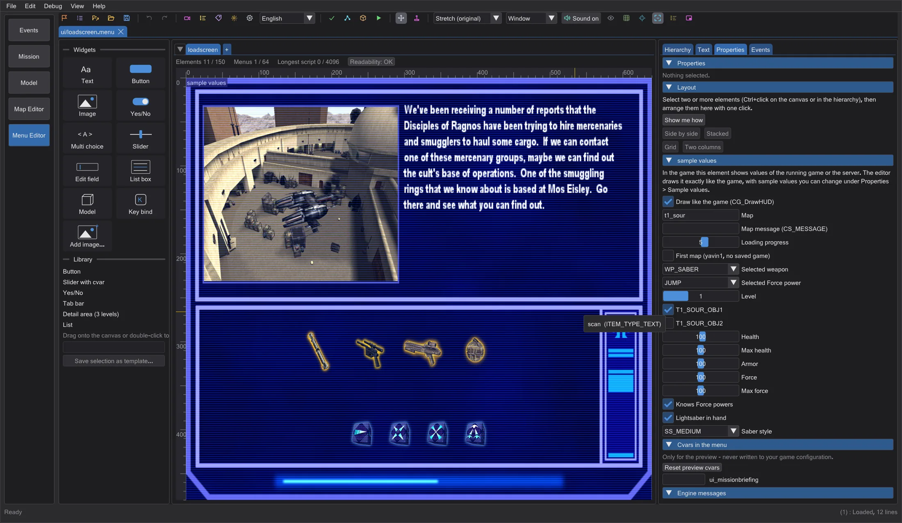
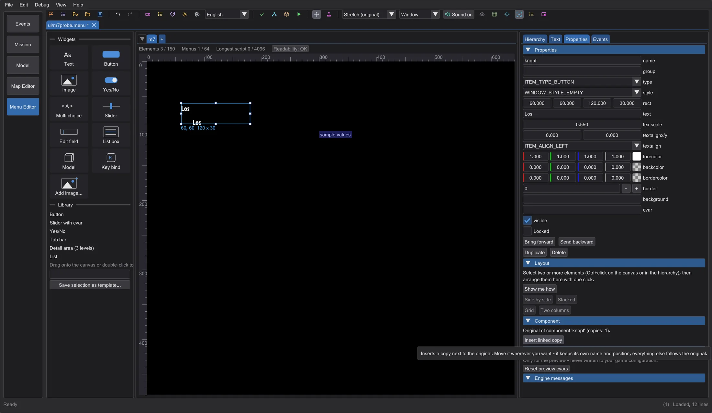
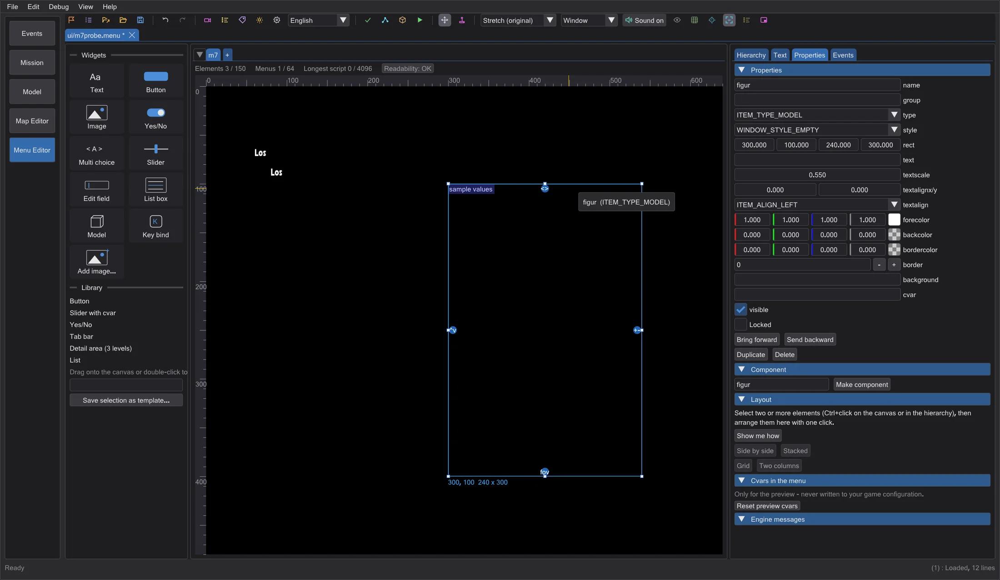

Menu editor: game values, reload in the game, components
Every element that shows values of the running game is now drawn like the game, with sample values you can change; key bindings show real keys; the loading and connect screens look like in the game; a game started with Test in game reloads your menus after saving; components keep copies in sync; models get handles for turning, distance and field of view.
Elements with values from the game#
Some elements (ownerdraw) are drawn by the game's code itself: the Force stars and Force points of the multiplayer player menus, the server source and filter, the bot names, the graphics driver page (GL_VENDOR and extensions - the editor reads them from your real OpenGL driver), the datapad with objectives, weapons and Force powers, the Pazaak board of Movie Duels and more. The editor now draws each of them exactly like the engine. Where the game takes the values from the running game or the server, it uses sample values and marks the element with sample values at the top left (only while editing). Change the samples under Properties > sample values: the selected weapon and Force power with its level, the objectives, health, Force and ammo, and for multiplayer the server settings (g_jediVmerc, g_forceBasedTeams, highest Force rank, server refresh). Elements that the game itself draws empty (for example the voice chat entries) stay empty; lists that are filled only during a match (player list) show sample names.

Jedi Outcast and Movie Duels draw their own datapad: health, armour, Force and ammo rings of the Jedi Outcast HUD, an icon strip with prongs behind the weapons, inventory and Force powers, and in Movie Duels smaller icons with one neighbour on each side, its 25 Force powers and its own texts. The preview follows the game whose data is loaded.
Key bindings: the key binding elements of the controls menus now show the keys the game binds by default (from the game's default config, for example default.cfg or mpdefault.cfg), with the game's key names - instead of ???. Commands the game does not list stay ???, as in the game.
Loading and connect screens#

The loadscreen menu of single player and the Connect menu of multiplayer are only part of what the game shows: while loading, the game draws the level shot, the weapon and Force icons of the saved game, the loading bar and the map name over it; while connecting, it writes map, server and connection state. The editor draws all of this like the game. Under Properties > sample values you choose the map, the map message, the loading progress and the special first map (black screen with a quote), or for multiplayer the server, the map, the connection state, the packets and the message. The switch Draw like the game (CG_DrawHUD) shows the plain menu instead.
Reload in the running game#
Test in game now puts your menus as loose files into its own test folder (never into the game folder) when it can reload them in the running game: with OpenJK and Movie Duels. The original programs of Jedi Academy and Jedi Outcast know ui_load too, but they ignore keys sent to a window in the background - for them the test keeps using the .pk3 and a new start. While that game runs, every save writes the files again and gives ui_load to the game: it closes its menus, reads the menu set again and opens the last menu - without restarting. The editor only sends keys to the window of the game it started itself.
Components#

Select an element and click Make component in the Properties: it becomes the original of a component. Insert linked copy inserts a linked copy next to it. Move the copy wherever you like - it keeps its own name and position; everything else follows the original: change the text, colour or size of the original and every copy changes with it (one Undo step). In the .menu file original and copies stay ordinary itemDefs with a comment line before them (// jkstudio:komponente <name>, // jkstudio:instanz <name>); the game reads them like any other element.
Aligning models#

A selected model element gets four handles. Drag the top one sideways to turn the model (model_angle), the right one up or down to move it farther away or closer, the left one to raise or lower it, and the bottom one sideways to change the field of view (model_fovx, model_fovy). The game places a menu model from the height of model_g2mins/model_g2maxs (not from model_origin), so distance and height change these two values. You see the result while dragging; releasing writes it into the menu as one Undo step.
New projects can start in multiplayer format: choose Single player or Multiplayer before New project.
Checked against the game#
The whole-menu templates were photographed in Movie Duels, in the original Jedi Academy and in Jedi Outcast and compared with the preview. Sliders have the size of each game: 128 wide in Jedi Academy and Jedi Outcast single player, 96 in Movie Duels and in multiplayer. Jedi Outcast treats every character after ^ as a colour (^B is green) and counts colour codes in the text width - the preview does the same, so centred and right-aligned texts sit where the game puts them.